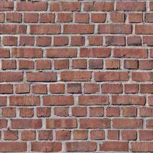

- this program implemented lighting and shading models. Including materials properties like ambient, diffuse, specular, reflective colors and shininess.
- light sources like ambient, directed and point light
- defined properties for vertices, including normal and materials
- implemented Gouraud Shading in vertex shader
- multiple vertex and fragment shapers to have a wall texture map
this program is simulating a merry go round structure
user is able to navigate around the scene by using keyboard inputs
